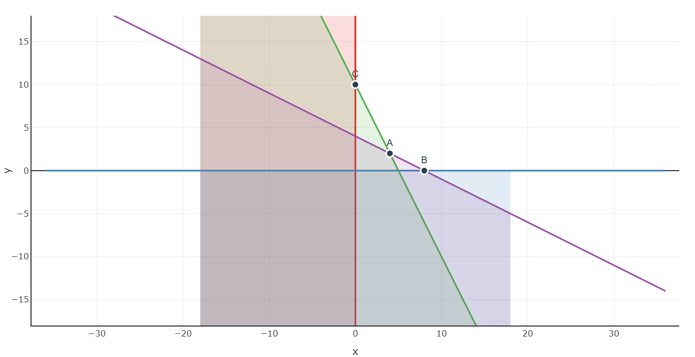

Interactive Linear Programming Tools
Explore fundamental methods for solving linear programming problems through interactive visualizations. Experiment with constraints, objective functions, and solution techniques in real time.
Interactive tools for exploring linear programming concepts and solution techniques.
Graphical Methods
- Method of Corners — visualize the feasible region, identify corner points, and find the optimal solution for 2-variable linear programs
Adjust constraints and objective functions in real time to see how the feasible region and optimal solution change.
Detailed Explorations

Method of Corners (Graphical Method)
Visualize the feasible region, corner points, and optimal solution for 2-variable linear programming problems.
Explore →